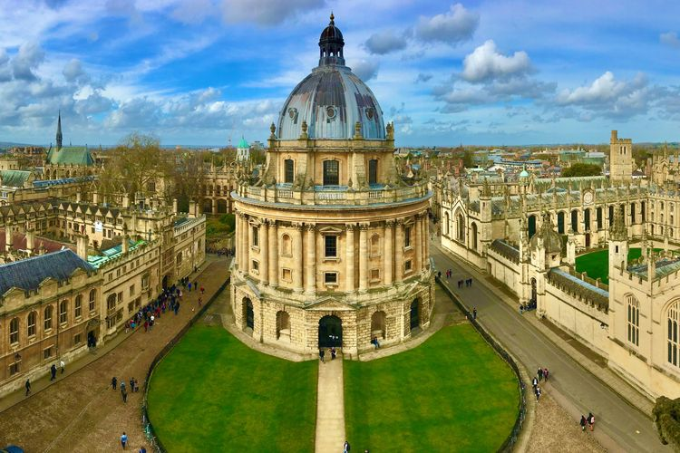

Beasiswa S2 Chevening Scholarship Dibuka September 2023, Ini Syaratnya
Ferlin, 23 Agustus 2023
Kompas.com
Bisa berkuliah di luar negeri merupakan mimpi semua orang, karena memiliki keuntungan tersendiri. Namun, banyak orang yang tidak mau berkuliah di luar negeri karena terkendala biaya kuliah yang mahal. Meski begitu kamu jangan takut, karena banyak beasiswa yang memfasilitasi untuk kuliah di luar negeri. Bagi kamu yang berminat kuliah di Inggris, maka ada beasiswa secara penuh oleh Chevening Scholarship yang akan segera dibuka pada September 2023. Beasiswa ini ditujukan bagi orang-orang yang ingin melanjutkan pendidikan S2, baik gelar pertama dan gelar kedua. Pada beasiswa ini, tidak ada batasan usia untuk mendaftar. Pada tahun 2021-2022, Chevening Scholarship menyediakan kuota untuk 1.600 mahasiswa di seluruh dunia. Beasiswa ini menjadi incaran banyak orang, karena Inggris menjadi idaman para pelajar untuk mengenyam pendidikan. Berikut syarat utama pelamar Chevening Scholarship seperti dilansir dari laman Instagram lembaga bimbingan studi luar negeri @schoters, Rabu (23/8/2023):
TERKAIT
Beasiswa S1 ke Oxford dan Cambridge 2024, Kuliah Gratis dan Tunjangan
Popular Post

Follow Me
https://instagram.com/kompascom